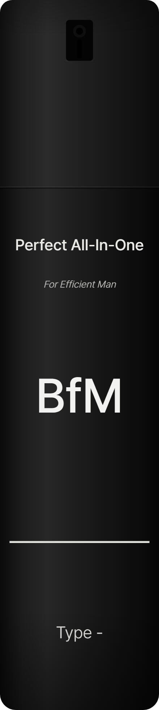

AI Skin Analysis
T존 · 볼 · 코 3부위를 카메라로 읽고8문항으로 확정합니다 — 약 1분

부위 분석 결과는 최종 결과 리포트에서 함께 보여드려요.
0~100 상대 지수 · 촬영 조건에 따라 달라질 수 있어요 · 사진은 기기에서만 처리
사람 얼굴이 잘 안 보여요.
얼굴 신호 분석과 설문을 종합한 결과예요. 참고용이며 의학적 진단은 아닙니다.